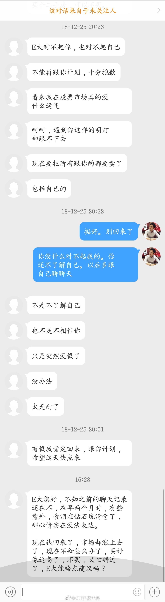

回复@小饺子ww:你再把责任推到别人身上，这辈子也不会有任何进步。建议你好好考虑一下自己的话合适不合适//@小饺子ww:四个月……之前不是说持续四个月到一年吗，我就没着急补啊……@ETF拯救世界:从数据看，本次进入钻石坑是十月，二月出坑，持续四个月。基本与历次熊市大坑持续时间差不多。历史上还没出现过出坑后马上又跌回去的情况，这次能不能出现？自行判断吧。
回复@小艾哦520:不是。12年12月以后，只是一两百只大盘股继续熊市。大多数股票已经开始伟大的牛市征程了。//@小艾哦520:e大2012年11月和2013年6月，不是出坑又进坑吗？@ETF拯救世界:从数据看，本次进入钻石坑是十月，二月出坑，持续四个月。基本与历次熊市大坑持续时间差不多。历史上还没出现过出坑后马上又跌回去的情况，这次能不能出现？自行判断吧。
回复@A夜如故:低位不敢买，涨起来了觉得赚少了，把存款拿出来当然多了一大笔了……//@A夜如故:到处看人回来一大笔钱，想问是哪里出现捡钱的地方么，坐等答案@ETF拯救世界:在股市最大的悲剧莫过于此。最低点。说实话，我不可能给出任何建议了。投资的钱，必须三五年不动，切切。 
回复@兔子遇见了蛇:谁跟你说他肯定知道还会不会到2500，请立即取关。多看的话有害无益。//@兔子遇见了蛇:E大，还能到2500吗@ETF拯救世界:再次提醒各位，看到任何新闻，都要心里面打个问号。如果有兴趣，就去深入研究一下实际的数据。就像去年所谓的商誉爆雷，大家都说天塌了。结果我研究一下爆雷的公司还不到A股10%，而且是一次性减值，明年业绩大概率都翻番的上涨，到底在怕什么？怕一年的业绩下降？所谓高管减持也一样。一两百家公司高管减持，跟咱们持有的A股前800家公司有什么关系？认真去研究研究，不要别人说什么自己就跟着信。这市场绝大多数人都是人云亦云，没有任何独立思考的能力。
再次提醒各位，看到任何新闻，都要心里面打个问号。如果有兴趣，就去深入研究一下实际的数据。就像去年所谓的商誉爆雷，大家都说天塌了。结果我研究一下爆雷的公司还不到A股10%，而且是一次性减值，明年业绩大概率都翻番的上涨，到底在怕什么？怕一年的业绩下降？所谓高管减持也一样。一两百家公司高管减持，跟咱们持有的A股前800家公司有什么关系？认真去研究研究，不要别人说什么自己就跟着信。这市场绝大多数人都是人云亦云，没有任何独立思考的能力。
回复@愿赌服输K:“高管扎堆减持”和“商誉爆雷”一样，都是媒体和大V赚你眼球的新闻。你有没有认真研究过到底有多少家公司减持，占全部公司总数的百分之多少，减持总额是总市值的多少？//@愿赌服输K:高管扎堆减持算利空，明晟提高系数算利好，这种情况该咋办@ETF拯救世界:检测牛熊的一个标准是：市场对消息的反应。熊市中，再好的利好都没用。牛市中，好消息坏消息都会引发上涨。今天就是一个很好的观察窗口。